1. 송현공 6세 손부 밀양 박씨 지묘
위치(위도,경도) : 36.033652,127.154397
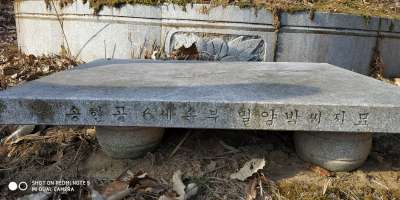 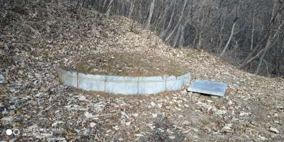
2. 송현공 7세 손부 김해 김씨 지묘
위치(위도,경도) : 36.036767, 127.160053
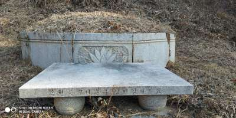
3. 송현공 9세 손부 부여 서씨 지묘
위치(위도,경도) : 36.029207,127.180327
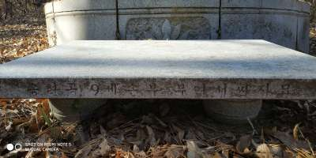

4. 송현공 6세손 몽훈 지묘
위치(위도,경도) : 36.028864,127.179256
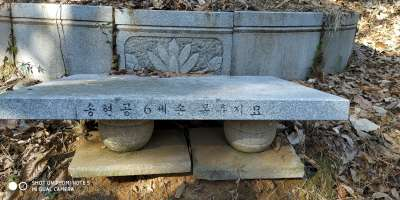
5. 가선 대부/평택 임공 휘 임술 배정부인 제주 고씨 지묘
위치(위도,경도) : 36.029762,127.179788
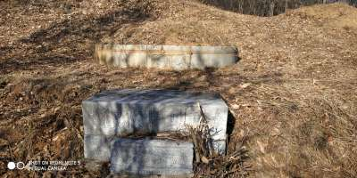 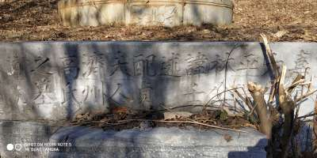
6.통정대부 평택 임공 휘 태교 지묘
위치(위도,경도) : 36.029807,127.179928
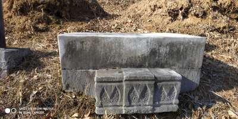
7. 통정대부 평택 임공 휘 영입 지묘
위치(위도,경도) : 36.029807,127.179928
8. 송현공 9세손 상복 지묘
위치(위도,경도) : 36.049299,127.187954
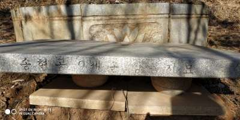 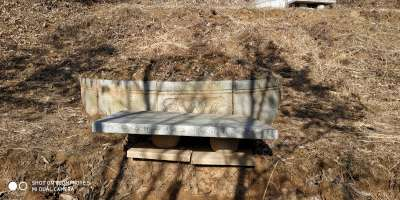 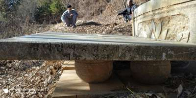
9. 송현공 8세손 영학 지묘
위치(위도,경도) : 36.049378,127.187958
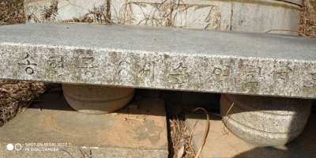 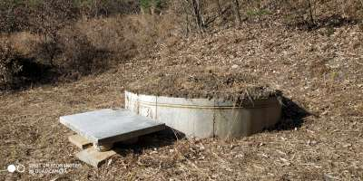 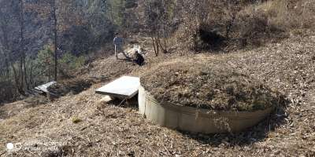
10. 송현공 8세손부 전주 이씨 지묘
위치(위도,경도) : 36.057006,127.193079
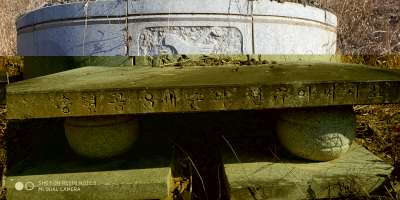 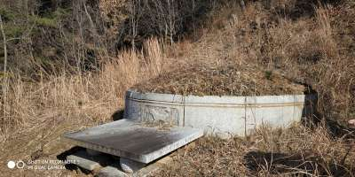 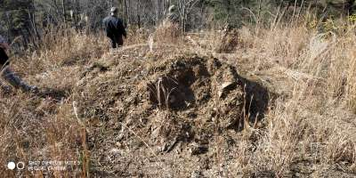 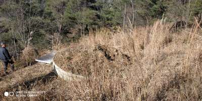
11. 송현공 9세손 상원 지묘
위치(위도,경도) : 36.055308,127.185688
 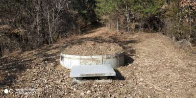
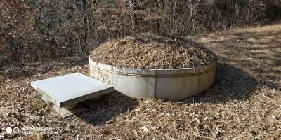
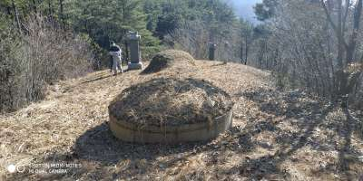
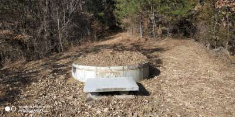
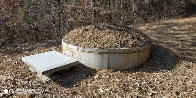
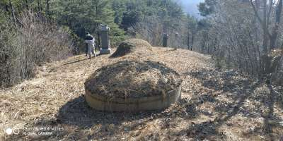
12. 송현공 7세손 옥원 지묘
위치(위도,경도) : 36.054447,127.221850
 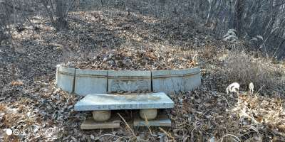
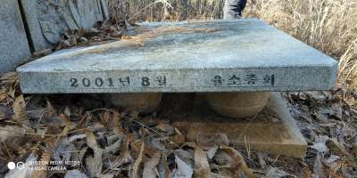
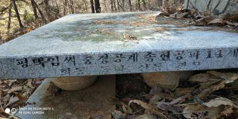
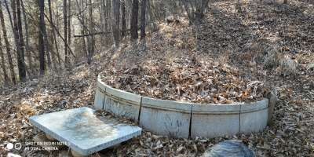
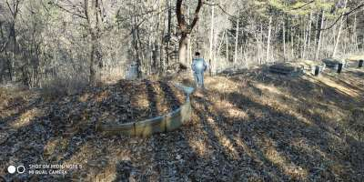
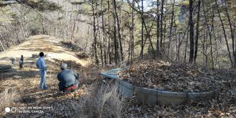
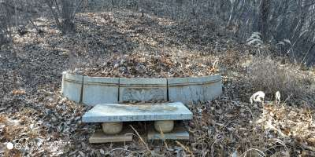
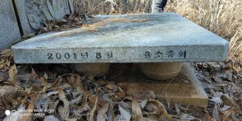
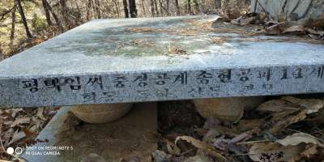
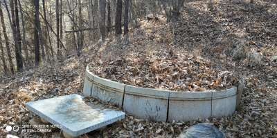
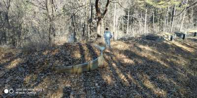
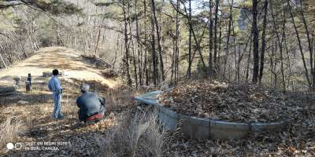